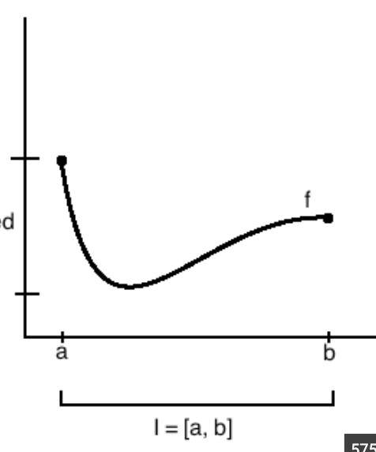

Theorem
If f is continuous on [a,b], then f is bounded on [a,b]. In other words, there exists an upper bound and lower bound for f on the interval [a,b]

Proof
Suppose f is continuous on [a,b] and f(a) < 0 < f(b)
Let S = {x in [a,b] | f is bounded on [a,x]}
S is non-empty because a is in S
It's bounded above because b is an upper bound, therefore S has a supremum; let c = sup(S)
We want to prove c=b so consider two scenarios: c
I: c < b
Because f is continuous at x=c, there exists delta (call it d) such that |x-c| < d implies |f(x)-f(c)| < 1
Therefore f is bounded on (c-d, c+d) which means f is bounded on [a,c+d), so c is not the sup of S
II: c > b
Supremums must be at most the maximum of a set. The maximum of S is b
Therefore c = b, so f is bounded on [a,b]